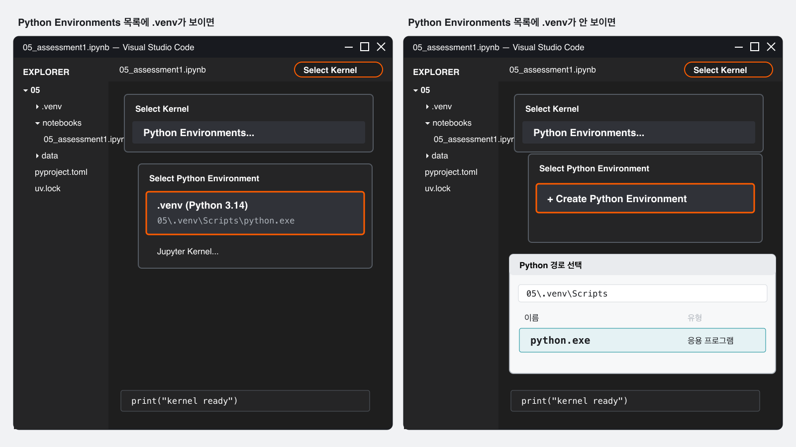

수행평가 1 안내
AI와 함께 만든 과정을 프로젝트로 남기기实践考核 1 说明
把与 AI 共同完成的过程保存为项目
자료를 내려받고 수행평가 준비를 시작한다下载资料，开始准备实践考核 핵심核心
오늘부터 수행평가를 준비합니다. 아래의 05 학생용 자료를 내려받은 뒤 압축을 푸세요. 안에 있는 05 폴더를 지난 시간부터 사용한 내 프로젝트 폴더에 넣으면 준비가 끝납니다.从今天开始准备实践考核。请先下载下方的05 学生用资料并解压。然后把其中的 05 文件夹放进上节课一直使用的个人项目文件夹，课前准备就完成了。
05 폴더가 나옵니다. JDH_VibeCoding_자기이름 안에 넣습니다.解压后会看到 05 文件夹。请把它放进 JDH_VibeCoding_자기이름 文件夹中（将“자기이름”换成自己的姓名）。폴더 안에는 이번 평가에서 읽을 CSV와 결과를 만들 Notebook, 프로젝트 환경을 알려 주는 파일이 들어 있습니다. 실습을 하면서 OpenCode와 나눈 대화도 JSON 파일로 저장할 겁니다. 마지막에는 이 파일들을 모두 담은 프로젝트를 ZIP 하나로 묶어 Google Form에 제출합니다. 파일을 올리려면 Google 계정으로 로그인해야 합니다.文件夹里有本次考核要读取的 CSV、用来生成结果的 Notebook，以及说明项目环境的文件。练习时与 OpenCode 的对话也要保存为 JSON 文件。最后，把包含这些文件的整个项目压缩成一个 ZIP 文件并提交到 Google Form。上传文件时必须登录 Google 账号。
그래프만 보면 AI에게 무슨 일을 맡겼고 결과를 어떻게 확인했는지 알 수 없습니다. 그래서 원본 자료와 실행 결과, AI 대화 기록을 함께 남깁니다.只看图表，无法知道你让 AI 做了什么，又是如何检查结果的。因此，需要把原始数据、运行结果和 AI 对话记录一起保留下来。
같은 CSV지만 크기가 달라진다还是 CSV，只是规模更大 핵심核心
4-2에서는 CSV의 첫 몇 행을 열어 열 이름과 값의 모양을 읽었습니다. 이번 파일은 12,960행이라 처음부터 끝까지 눈으로 읽을 수 없습니다. 먼저 열 이름과 값의 뜻을 살펴 자료가 무엇을 기록한 것인지 파악합니다. 필요한 경우 AI에게 설명을 요청하고, 무엇을 그래프로 볼지 정합니다.4-2 中，我们打开 CSV 的前几行，读过列名和值的形式。这次的文件有 12,960 行，无法从头到尾逐行阅读。先查看列名和各列值的含义，弄清这份数据记录了什么。需要时可以请 AI 说明，再决定要用图表观察什么。
첫 몇 행을 보고 열 이름과 값의 모양을 확인했습니다.通过前几行确认列名和值的形式。
자료가 무엇을 기록했는지 파악한 뒤, 보고 싶은 내용에 알맞은 그래프를 고릅니다.先弄清数据记录了什么，再选择适合所要观察内容的图表。
결과와 함께 만든 과정을 본다不只看结果，也要看完成过程 핵심核心
수행평가에서는 완성된 그래프만 보지 않습니다. 먼저 어떤 데이터인지와 각 값이 무엇을 뜻하는지 확인합니다. 다음으로 이 데이터를 시각화하는 데 알맞은 그래프를 고르고, AI가 실제 작업에 들어가기 전에 수행 계획을 세우게 합니다. 그 계획을 확인한 뒤 실행을 맡기고, 결과가 맞는지와 그래프를 통해 무엇이 보이는지를 살펴봅니다.实践考核不只看完成的图表。先确认这是什么数据，以及各列的值代表什么。接着选择适合可视化这份数据的图表，让 AI 在开始实际操作前先提出执行计划。确认计划后再让它执行，并检查结果是否正确、能从图表中看出什么。
- 자료 파악: 어떤 데이터인지, 한 행과 각 열의 값이 무엇을 뜻하는지 파악했는가?了解数据：是否弄清这是什么数据，以及一行记录和各列的值分别代表什么？
- 계획: 이 데이터를 시각화하는 데 알맞은 그래프를 고르고, AI가 제시한 작업 계획을 확인했는가?计划：是否选择了适合这份数据的图表，并检查了 AI 提出的工作计划？
- 실행: 확인한 계획에 따라 필요한 작업을 실제로 수행했는가?执行：是否按照确认过的计划实际完成了所需工作？
- 검토·해석: 그래프가 정확한지 확인하고, 이 그래프를 통해 무엇이 보이는지 적었는가?检查与解读：是否确认图表准确，并写下通过这张图能看出什么？
AI에게 바로 만들라고 하기보다 먼저 작업 계획을 세우게 합니다. 그 계획이 내가 고른 목표와 그래프에 맞는지 확인한 뒤 실행을 승인합니다. 실제 작업은 확인한 계획에 따라 AI가 수행할 수도 있고, 필요한 부분을 학생이 직접 실행할 수도 있습니다.不要直接让 AI 开始制作，而要先让它提出工作计划。确认计划符合自己选择的目标和图表后，再批准执行。实际工作可以由 AI 按确认过的计划完成，也可以由学生亲自运行必要的部分。
폴더 구조와 환경 정보를 함께 전한다同时分享文件夹结构和环境信息 핵심核心
Notebook과 CSV만 따로 보내면 파일이 원래 어디에 있었는지 알기 어렵습니다. Notebook이 data 폴더의 CSV를 읽도록 만들어졌다면, 폴더와 파일의 위치가 바뀌었을 때 자료를 찾지 못할 수도 있습니다. 그래서 프로젝트를 공유할 때는 폴더 구조를 그대로 유지합니다. 반면 .venv에 설치된 Python과 라이브러리는 컴퓨터마다 달라 그대로 복사하지 않고, pyproject.toml과 uv.lock처럼 환경을 다시 만들 수 있는 정보를 전합니다.如果只单独发送 Notebook 和 CSV，接收者很难知道这些文件原来放在哪里。若 Notebook 被设置为读取 data 文件夹中的 CSV，一旦文件夹或文件位置改变，就可能找不到数据。因此，分享项目时要保持原有的文件夹结构。但 .venv 中安装的 Python 和库会因电脑而异，不直接复制，而是提供 pyproject.toml、uv.lock 等可重建环境的信息。
05/ ├─ README.md ├─ pyproject.toml ├─ uv.lock ├─ notebooks/ │ └─ 05_assessment1.ipynb ├─ data/ │ └─ 05-data-1-school-facility-usage.csv └─ evidence/ └─ opencode-session.json
공유할 때도 05 폴더 아래의 상대적인 위치를 바꾸지 않습니다. .venv는 빼지만, 그 환경을 다시 만들 수 있도록 pyproject.toml과 필요한 경우 uv.lock을 남깁니다.分享时也不要改变 05 文件夹下各文件的相对位置。虽然不包含 .venv，但要保留 pyproject.toml，并在需要时保留 uv.lock，让接收者能够重建环境。
위 폴더의 evidence와 OpenCode JSON은 일반적인 프로젝트 공유 파일이 아닙니다. 이번 수행평가에서 AI를 어떻게 활용했는지 확인하기 위해 추가로 제출하는 평가용 기록입니다.上面文件夹中的 evidence 和 OpenCode JSON 不是通常分享项目时包含的文件。它们是本次实践考核为了确认 AI 使用过程而额外提交的考核记录。
받은 사람이 다시 실행할 수 있어야 한다接收者应该能够重新运行项目 핵심核心
받은 사람이 프로젝트를 다시 실행하려면 Notebook과 CSV만으로는 부족합니다. 무엇을 하는 프로젝트인지 설명하는 파일과, 필요한 Python과 라이브러리를 자기 컴퓨터에 다시 준비할 수 있는 환경 정보도 함께 있어야 합니다. 파일마다 맡은 역할이 다릅니다.接收者要重新运行项目，只有 Notebook 和 CSV 还不够。还需要说明项目用途的文件，以及能在自己的电脑上重新准备 Python 和库的环境信息。每类文件承担的作用不同。
Notebook에는 작업과 실행 결과가, CSV에는 그래프의 바탕이 된 원본 자료가 담깁니다.Notebook 保存工作内容和运行结果，CSV 保存制作图表所依据的原始数据。
README.md에는 프로젝트가 무엇을 하는지와 폴더·주요 파일의 구성을 적습니다.README.md 说明项目做什么，以及文件夹和主要文件如何组成。
pyproject.toml과 uv.lock은 필요한 Python과 라이브러리 정보를 전합니다.pyproject.toml 和 uv.lock 用来传递所需的 Python 与库信息。
이 세 가지가 같은 폴더 구조 안에 있어야 받은 사람이 프로젝트를 이해하고 실행 환경을 다시 만들 수 있습니다.这三类内容要保留在同一套文件夹结构中，接收者才能理解项目并重新建立运行环境。
다시 만들 수 없는 작업 내용은 함께 보낸다无法重新生成的工作内容要一起发送 핵심核心
Notebook에는 실행한 코드와 그 결과가 남고, CSV는 그 결과를 만든 원본 자료입니다. 이 두 파일은 프로젝트의 작업과 결과를 확인하고 다시 실행할 때 필요합니다. OpenCode 대화 기록은 성격이 다릅니다. 프로젝트 실행에 필요한 파일이 아니라, 이번 수행평가에서 무엇을 요청하고 어떤 계획을 확인했는지 보여 주는 평가 자료입니다.Notebook 中保留运行过的代码和结果，CSV 是生成这些结果所使用的原始数据。这两个文件用于查看项目工作并重新运行。OpenCode 对话记录的性质不同：它不是运行项目所需的文件，而是本次实践考核用来查看提出了什么请求、确认了什么计划的考核材料。
실행한 코드와 그래프, 검토와 해석이 함께 남습니다. 그래프가 화면에 나온 뒤 저장해야 출력도 파일에 남습니다.保存运行过的代码、图表、检查与解读。图表显示后再保存，输出结果才会保留在文件中。
그래프의 바탕이 된 원본 자료입니다. Notebook만 보내면 어떤 값을 읽어 그래프를 만들었는지 다시 확인할 수 없습니다.这是制作图表所依据的原始数据。如果只发送 Notebook，就无法重新确认图表读取了哪些数值。
자료를 어떻게 파악했고, 어떤 그래프를 고르며, AI의 계획을 어떻게 확인했는지 보여 줍니다. 이번 수행평가에서는 제출하지만 일반적인 프로젝트 공유에는 보통 넣지 않습니다.展示如何理解数据、选择图表以及检查 AI 计划。本次实践考核需要提交，但一般分享项目时通常不会包含。
Notebook과 CSV는 프로젝트 파일입니다. OpenCode JSON은 이번 평가에서 AI 활용 과정을 확인하기 위해 추가하는 기록입니다.Notebook 和 CSV 是项目文件。OpenCode JSON 是本次考核为了确认 AI 使用过程而额外提交的记录。
환경 폴더 대신 환경을 다시 만들 정보를 보낸다不发送环境文件夹，而是发送重建环境所需的信息 핵심核心
지난 시간에는 pyproject.toml을 읽어 필요한 Python 버전과 라이브러리를 확인하고, uv sync로 환경을 준비했습니다. 또 uv add를 직접 실행하거나 AI에게 맡겨 라이브러리를 추가한 뒤, pyproject.toml이 어떻게 바뀌었는지도 확인했습니다. 이 경험이 프로젝트 공유에도 그대로 이어집니다.上节课我们读取 pyproject.toml，确认所需的 Python 版本和库，并通过 uv sync 准备环境。我们还直接运行 uv add 或交给 AI 添加库，并确认 pyproject.toml 如何发生变化。这些经验也同样用于项目分享。
README.md이 프로젝트가 무엇을 하는지, 폴더와 주요 파일이 어떻게 구성되어 있는지를 설명합니다. 필요한 경우 환경 준비와 실행 방법도 함께 적습니다.说明这个项目做什么，以及文件夹和主要文件如何组成。需要时，也会补充环境准备与运行方法。
pyproject.toml프로젝트에서 요구하는 Python 버전과 라이브러리 목록을 담습니다. uv add로 라이브러리를 추가하면 이 파일도 바뀝니다.记录项目所需的 Python 版本和库清单。使用 uv add 添加库时，这个文件也会更新。
uv.lock설치에 사용한 라이브러리의 정확한 버전을 기록합니다. 항상 필수인 파일은 아니지만, 이번 수행평가에서는 선생님 컴퓨터에서도 같은 버전으로 확인할 수 있도록 함께 제출합니다.记录安装时使用的库的准确版本。它并非任何情况下都必须分享，但本次实践考核要一起提交，以便老师的电脑也能使用相同版本进行检查。
받은 사람은 pyproject.toml과 uv.lock이 있는 폴더에서 uv sync를 실행합니다. 그러면 uv가 두 파일을 읽고 필요한 Python과 라이브러리를 준비합니다.接收者在包含 pyproject.toml 和 uv.lock 的文件夹中运行 uv sync。uv 会读取这两个文件，准备所需的 Python 和库。
.venv와 임시 파일은 공유하지 않는다不分享 .venv 和临时文件 핵심核心
.venv에는 이 컴퓨터에서 사용할 Python과 라이브러리가 실제로 설치되어 있습니다. 그래서 용량이 크고, 다른 컴퓨터에 그대로 복사해도 경로나 운영체제가 달라 제대로 작동하지 않을 수 있습니다. 환경 정보 파일을 함께 보냈다면 받은 사람이 uv sync로 자기 컴퓨터에 맞는 .venv를 새로 만들 수 있습니다..venv 中实际安装了当前电脑使用的 Python 和库，因此体积较大。即使原样复制到另一台电脑，也可能因为路径或操作系统不同而无法正常使用。只要分享了环境信息文件，接收者就能通过 uv sync 在自己的电脑上重新创建合适的 .venv。
.venvpyproject.toml과 uv.lock을 읽어 다시 만들 수 있습니다. ZIP 용량을 크게 늘리므로 제출 사본에서 뺍니다.可以根据 pyproject.toml 和 uv.lock 重新创建。它会大幅增加 ZIP 大小，因此从提交副本中删除。
프로그램을 실행하는 동안 자동으로 생긴 파일입니다. 없어도 다시 만들어지므로 공유하지 않습니다.这些文件在程序运行时自动生成，即使没有也会重新产生，因此不需要分享。
원본 작업 폴더에서 바로 지우지 않습니다. 5-2에서 제출용 사본을 만든 뒤, 그 사본에서만 .venv와 임시 파일을 뺍니다.不要直接从原始工作文件夹中删除。5-2 中先制作提交副本，再只从副本中删除 .venv 和临时文件。
프로젝트 파일과 평가용 기록을 구분한다区分项目文件与考核记录 핵심核心
앞에서 살펴본 내용을 실제 공유 기준으로 정리해 봅시다. 프로젝트를 이해하고 다시 실행하는 데 필요한 파일은 함께 보내고, 컴퓨터마다 다시 만들 수 있는 폴더는 뺍니다. 프로젝트와 상황에 따라 선택할 수 있는 파일도 있습니다.把前面学过的内容整理成实际分享标准。用于理解项目并重新运行的文件要一起发送；每台电脑都能重新生成的文件夹则不发送。有些文件也可以根据项目和情况选择。
Notebook · CSV · README.md · pyproject.tomlNotebook · CSV · README.md · pyproject.toml
작업과 원본, 프로젝트 설명, Python과 라이브러리 요구사항입니다.包括工作结果与原始数据、项目说明、Python 与库的需求。
uv.lockuv.lock
같은 라이브러리 버전이 중요하면 uv.lock을 함께 보냅니다. 이번 수행평가에서는 선생님 컴퓨터에서도 같은 버전으로 확인할 수 있도록 제출합니다.需要保持相同库版本时一起发送 uv.lock。本次实践考核要提交，以便老师的电脑也能使用相同版本进行检查。
.venv · 캐시 · 임시 파일.venv · 缓存 · 临时文件
환경 정보로 다시 만들 수 있거나 실행 중 자동으로 생기는 파일입니다.这些内容可以根据环境信息重新生成，或会在运行时自动产生。
이번 수행평가에서는 uv.lock도 제출합니다. OpenCode JSON은 일반적인 프로젝트 공유물이 아니라, AI 활용 과정을 확인하기 위해 이번 평가에서만 추가하는 기록입니다.本次实践考核也要提交 uv.lock。OpenCode JSON 不是一般项目分享文件，而是为了确认 AI 使用过程而仅在本次考核中额外提交的记录。
05 폴더를 통째로 열고 환경을 만든다打开整个 05 文件夹并创建环境 실습实操
2쪽에서 내려받은 05 폴더를 이제 VS Code에서 엽니다. Notebook 파일만 바로 열면 환경 파일과 데이터 폴더를 한 프로젝트로 인식하지 못할 수 있으므로, VS Code의 폴더 열기로 05 폴더 전체를 여세요.现在用 VS Code 打开第 2 页下载的 05 文件夹。如果只直接打开 Notebook 文件，VS Code 可能无法把环境文件和数据文件夹当作同一个项目处理。请使用 VS Code 的打开文件夹，打开整个 05 文件夹。
- 내려받은 ZIP의 압축을 푼다.解压下载的 ZIP。
- VS Code에서
05폴더를 연다.在 VS Code 中打开05文件夹。 - 직접
uv sync를 실행하거나, 아래 요청을 OpenCode에 보낸다.自己运行uv sync，或把下面的请求发送给 OpenCode。 notebooks/05_assessment1.ipynb를 연다.打开notebooks/05_assessment1.ipynb。- 오른쪽 위에서
05폴더의.venv를 사용하는 커널을 선택한다.在右上角选择使用05文件夹中.venv的内核。
이 프로젝트는 uv를 사용해. pip나 pip install은 사용하지 말고, 현재 05 폴더의 pyproject.toml과 uv.lock을 확인한 뒤 uv sync를 실행해 줘. 끝나면 어떤 파일을 확인했고 어떤 작업을 했는지 알려 줘.
这个项目使用 uv。 不要使用 pip 或 pip install。请先检查当前 05 文件夹中的 pyproject.toml 和 uv.lock，再运行 uv sync。 完成后说明检查了哪些文件、执行了什么操作。
직접 실행하든 OpenCode에 맡기든 터미널의 시작 위치가 05 폴더여야 합니다. OpenCode에 맡길 때는 uv를 쓴다고 말해야 pip install 대신 프로젝트 방식에 맞게 준비합니다.无论自己运行还是交给 OpenCode，终端的起始位置都必须是 05 文件夹。交给 OpenCode 时要明确说明使用 uv，这样它才会按项目方式准备，而不是使用 pip install。
Python Environments에서 05 폴더의 .venv를 고른다在 Python Environments 中选择 05 文件夹的 .venv 실습实操
uv sync가 끝나면 notebooks/05_assessment1.ipynb를 열고 오른쪽 위의 Select Kernel을 누릅니다. 그다음 Python Environments...를 여세요. 커널 이름은 컴퓨터와 VS Code 상태에 따라 .venv, jangdaehyun-assessment1, 또는 .venv/bin/python 같은 실행 경로로 보일 수 있습니다. 이름만 보지 말고 05 폴더 안의 .venv를 가리키는지 확인합니다.uv sync 完成后，打开 notebooks/05_assessment1.ipynb，点击右上角的 Select Kernel，再打开 Python Environments...。根据电脑和 VS Code 的状态，内核名称可能显示为 .venv、jangdaehyun-assessment1，也可能显示为 .venv/bin/python 这样的运行路径。不要只看名称，要确认它指向 05 文件夹中的 .venv。
.venv,jangdaehyun-assessment1, 또는 Python 경로로 보이는 항목을 살펴본다.查看名称为.venv、jangdaehyun-assessment1或显示为 Python 路径的项目。- 표시된 경로가
05\.venv\Scripts\python.exe로 이어지는 항목을 고른다.选择路径指向05\.venv\Scripts\python.exe的项目。
- 같은 창의 Create Python Environment를 누른다.在同一个窗口中点击 Create Python Environment。
- 경로 선택에서
05\.venv\Scripts\python.exe를 찾아 고른다.在路径选择中找到并选择05\.venv\Scripts\python.exe。 - 선택한 경로가
05폴더 안의.venv인지 다시 확인한다.再次确认所选路径位于05文件夹的.venv中。
선택한 경로를 마지막으로 확인한다最后确认所选路径 실습实操
커널을 골랐다면 Notebook 오른쪽 위에 선택한 항목이 보입니다. 표시 이름이 다르더라도 05 폴더 안의 .venv를 가리키면 바른 선택입니다.选好内核后，Notebook 右上角会显示所选项目。即使显示名称不同，只要它指向 05 文件夹中的 .venv，就是正确的选择。

선택 뒤 오른쪽 위에는 .venv 대신 jangdaehyun-assessment1이나 Python 버전이 보일 수도 있습니다. 표시 이름보다 선택한 Python의 경로가 05\.venv\Scripts\python.exe인지 확인하는 것이 중요합니다.选择后，右上角也可能不显示 .venv，而显示 jangdaehyun-assessment1 或 Python 版本。比显示名称更重要的是，所选 Python 的路径是否为 05\.venv\Scripts\python.exe。
12,960행의 학교 시설 이용 자료를 사용한다使用 12,960 行的学校设施使用数据 핵심核心
05-data-1-school-facility-usage.csv는 학교 시설 이용 인원을 기록한 가상 표입니다. 열 이름과 시설 이름은 영어로 적혀 있으므로, 먼저 아래 다섯 열이 무엇을 뜻하는지만 확인합니다. 수행평가에서는 이 자료를 직접 요약하고 그래프로 나타낸 뒤, 그래프를 통해 무엇이 보이는지 찾습니다.05-data-1-school-facility-usage.csv 是记录学校设施使用人数的虚拟表格。列名和设施名称使用英文，因此先确认下面五列分别代表什么。在实践考核中，学生要自己汇总这份数据并制作图表，然后找出通过图表能看到的内容。
| 열 이름列名 | 뜻含义 | 값의 예示例值 |
|---|---|---|
date | 날짜日期 | 2026-03-02 |
weekday | 요일星期 | Monday |
time_slot | 24시간 형식의 시간대24 小时制时段 | 08:00 |
facility | 학교 안의 공간校内场所 | Computer_Room |
visitors | 이용 인원使用人数 | 18 |
facility 값은 영어로 적혀 있고, 두 단어로 된 공간 이름은 Computer_Room처럼 밑줄로 이어져 있습니다. 이 자료는 실제 학교 통계가 아닌 수행평가용 가상 데이터입니다.facility 的值使用英文，两个单词组成的场所名称会像 Computer_Room 一样用下划线连接。这是为实践考核制作的虚拟数据，不是学校真实统计。
한 번에 다 시키지 않고 판단의 순서를 남긴다不一次性交代所有任务，要保留判断顺序 핵심核心
먼저 어떤 데이터인지와 각 값의 뜻을 확인합니다. 그다음 시각화할 내용과 알맞은 그래프를 고릅니다. 바로 제작을 맡기지 않고 AI가 작업 순서를 먼저 계획하게 한 뒤, 계획이 목표에 맞는지 확인하고 실행을 승인합니다. 마지막에는 결과의 정확성과 그래프를 통해 보이는 내용을 살펴봅니다.先确认这是什么数据以及各项数值的含义。接着确定要可视化的内容并选择合适的图表。不要立刻让 AI 制作，而要让它先规划工作步骤；确认计划符合目标后再批准执行。最后检查结果是否准确，并观察通过图表能看出什么。
AI의 계획을 먼저 확인하면 자료 파악이나 검토 과정이 빠지는 일을 줄일 수 있습니다. 계획이 알맞으면 실행을 승인하고, 부족하면 계획부터 고칩니다.先检查 AI 的计划，可以减少遗漏数据理解或结果检查的情况。计划合适就批准执行，不足时先修改计划。
전체를 훑지 않고 자료를 파악한다不用逐行浏览，也能了解数据 핵심核心
1만 행이 넘는 파일은 한 줄씩 모두 읽을 수 없습니다. 먼저 열 이름과 몇 개의 값을 살펴 자료가 어떤 기록인지 파악합니다. 직접 읽어도 되고 AI에게 설명을 요청해도 됩니다. 그런 다음 이 자료에서 무엇을 보고 싶은지 정하고, 그 내용을 나타내기에 알맞은 그래프를 고릅니다.一万多行的数据无法逐行全部阅读。先查看列名和几项值，弄清这份数据记录了什么。可以自己阅读，也可以请 AI 说明。接着决定想从数据中观察什么，再选择适合呈现该内容的图表。
- 열 이름과 각 열에 들어 있는 값 몇 개를 살펴본다.查看列名和每列中的几项值。
- 직접 파악하거나 AI에게 이 자료가 무엇을 기록한 것인지 설명해 달라고 요청한다.自己理解数据，或请 AI 说明这份数据记录了什么。
- 이 자료에서 비교하거나 살펴볼 내용을 정한다.确定想从这份数据中比较或观察什么。
- 그 내용을 나타내기에 알맞은 그래프와 선택 이유를 정한다.选择适合呈现该内容的图表，并说明理由。
- AI가 제시한 작업 계획을 확인하고 승인한 뒤 실행한다.检查 AI 提出的工作计划，批准后再执行。
- 그래프가 원본 자료에 맞는지 확인하고, 그래프를 통해 보이는 내용을 적는다.确认图表与原始数据相符，并写下从图表中看到的内容。
그래프 종류부터 정하지 않습니다. 먼저 자료를 파악하고 무엇을 보고 싶은지 정한 다음, 그 목적에 맞는 그래프를 고릅니다.不要一开始就确定图表类型。先了解数据并确定想观察什么，再选择符合目的的图表。
AI와 나눈 대화도 함께 제출한다AI 对话记录也要一起提交 핵심核心
OpenCode 대화 기록은 프로젝트를 다른 사람에게 공유할 때 보통 보내는 파일이 아닙니다. 이번 수행평가에서는 AI에게 무엇을 묻고 어떤 계획을 확인했는지 평가하기 위해 함께 제출합니다. 평가를 마친 뒤 관련 대화를 JSON 파일로 추출해 evidence 폴더에 넣습니다. 추출하는 방법은 5-2에서 순서대로 확인합니다.OpenCode 对话记录通常不是分享项目时会发送的文件。本次实践考核为了评价向 AI 提出了什么问题、确认了什么计划，要求一起提交。考核结束后，把相关对话导出为 JSON 文件，放入 evidence 文件夹。具体导出方法将在 5-2 中按步骤确认。
실행한 코드와 그래프, 검토·해석 내용이 남습니다.保留运行过的代码、图表以及检查和解读内容。
자료를 파악하고 계획을 확인한 AI 대화 기록이 남습니다.保留理解数据并确认计划的 AI 对话记录。
관련 대화가 여러 개라면 그 기록을 모두 제출합니다. 지금은 추출 방법을 실습하지 않고, 제출할 기록이 있다는 점만 확인합니다.如果相关对话有多个，需要全部提交。现在不练习导出方法，只需确认之后还要提交这些记录。
시작할 준비가 되었는지 점검한다检查是否已准备好开始 핵심核心
오늘은 평가에 들어가기 전에 프로젝트와 제출 방법을 살펴봤습니다. 다음 차시에 실습을 바로 시작할 수 있도록 아래 항목을 하나씩 확인하세요. 준비되지 않은 항목이 있다면 어느 단계에서 막혔는지를 선생님에게 알립니다.今天我们在进入考核之前，先了解了项目结构和提交方法。为了下节课能直接开始操作，请逐项确认下面的内容。如果还有没有准备好的部分，要告诉老师自己卡在了哪一步。
- 05 폴더를 VS Code로 열었다.已在 VS Code 中打开 05 文件夹。
uv sync가 완료되었다.uv sync已完成。- Notebook에서
.venv커널을 선택했다.Notebook 已选择.venv内核。 - 사용할 CSV가
05-data-1-school-facility-usage.csv인지 확인했다.已确认要使用的 CSV 是05-data-1-school-facility-usage.csv。 - 자료 파악 → 선택·계획 → 실행 → 검토·해석의 네 단계를 알고 있다.知道了解数据 → 选择与计划 → 执行 → 检查与解读这四个阶段。
- OpenCode 대화 JSON을 이번 평가 기록으로 제출한다는 것을 알고 있다.知道需要把 OpenCode 对话 JSON 作为本次考核记录提交。
- 그래프를 실행해 출력이 보인 뒤
Ctrl+S로 Notebook을 저장해야 한다는 것을 알고 있다.知道要先运行图表，在输出可见后按Ctrl+S保存 Notebook。 .venv를 빼고 프로젝트를 ZIP으로 제출한다는 것을 알고 있다.知道提交 ZIP 时要排除.venv。- 제출할 때 사용할 Google 계정으로 로그인할 수 있다.能够登录提交时要使用的 Google 账号。
다음 차시에는 AI가 제시한 계획을 확인하고 승인한 뒤 작업을 수행합니다. 마지막에는 결과를 검토하고 그래프를 통해 보이는 내용을 적어 제출합니다.下节课先检查并批准 AI 提出的计划，再完成相应任务。最后检查结果，写下通过图表能看出的内容并提交。